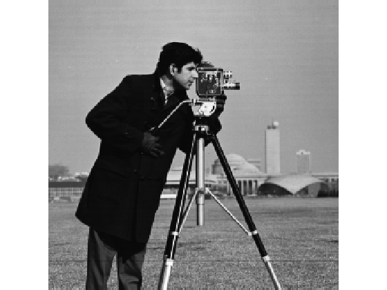
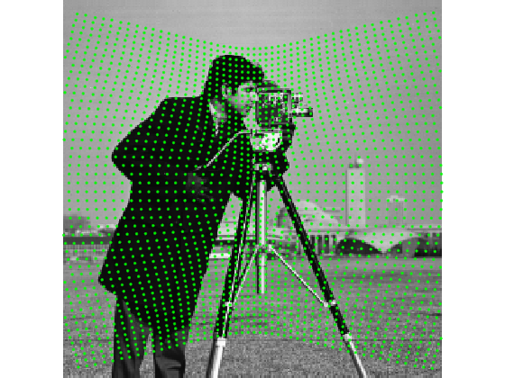
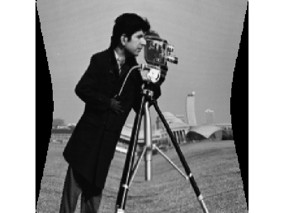

Contents
img = imread('cameraman.tif');
angles = 0:359;
scalings = 1 + 0.2 * cos(deg2rad(2 * angles));
transfo = RadialScalingTransform2D(angles, scalings);
figure(1); close;
figure(1); imshow(img);
hold on;

points within the whole image
center = [128 128];
lx = 10:5:250;
ly = 10:5:250;
[x, y] = meshgrid(lx, ly);
pts = [x(:)-center(1) y(:)-center(1)];
pts2 = transformPoint(transfo, pts);
pts2 = bsxfun(@plus, pts2, center);
drawPoint(pts2, 'g.');

reamsple image
lx = 1:size(img, 2);
ly = 1:size(img, 1);
[x, y] = meshgrid(lx, ly);
pts = [x(:)-center(1) y(:)-center(1)];
pts2 = transformPoint(transfo, pts);
pts2 = bsxfun(@plus, pts2, center);
img2 = reshape(imEvaluate(img, pts2), size(img));
figure;
imshow(img2, [0 255]);
